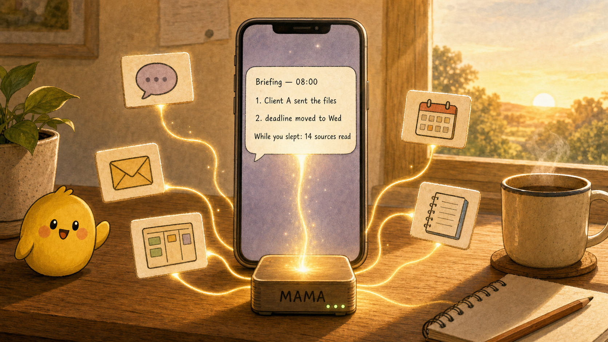

Never lose the record.
Original text, time, source, and later changes are kept, not overwritten.
MAMA is a memory store that runs on your own computer, and an AI assistant that works from it. It keeps what flows through your connected messengers, mail, documents, and calendars as-is, and the assistant reads that record to tell you what changed and do what you ask.

An AI assistant is only useful with memory, and memory kept on a company's server disappears when the service changes or shuts down. MAMA keeps the record of what you did and decided on your own computer, in the original form, so a better model can read the same record tomorrow. The memory layer is fixed; which sources you connect and what work you hand over is up to you.
Original text, time, source, and later changes are kept, not overwritten.
Every change the assistant makes names the message or event behind it, or is marked "no cause".
Sending messages, paying, deleting: anything with outside effect requires prior permission for that target.
Say "keep reports short" or "cards on the dashboard" once; it is stored as a rule and applied from then on.
The assistant's brain (Claude, Codex, Cline) is swappable; the record's format is not.
Speed and convenience improve only within the five above.
| Layer | What it holds |
|---|---|
| What you add | sources to connect · work to hand over · rules you correct |
| The assistant | one assistant · a tool catalog · permission scopes · a rule store |
| The memory store | SQLite on your machine: originals · decision history · change causes · run logs · local search index |
Memory store. Per-source originals live in
~/.mama/connectors/<name>/raw.db; decisions and change logs under
~/.mama/. Changing a decision adds a "this replaced that" link instead of
deleting the old one. Each change log row holds what changed and what caused it; a row
with a faked cause is rejected at write time. The search index (embeddings) is built
locally.
Assistant. Your messages, scheduled reports, new source content, and timed jobs all reach one assistant. It picks tools from the catalog and hands long reads and background work to helper agents, taking back only the result. Every run carries a permission scope saying what it may touch and until when. Your corrections are stored as rules and offered as candidates in similar situations. Reports and the board are edited from the last published version, not rebuilt.
What you add. A new source is one IConnector
implementation; polling and storage are handled. A new kind of work is one entry in the
tool catalog. A new rule is one message.
claude or codex CLI.claude auth login # or: codex login npm install -g @jungjaehoon/mama-os mama --help # tells you the next step mama status # setup is done when the first report arrives
mama gateway telegram --token-stdin (Slack and Discord work
the same way)
mama connector add <name>, then mama connector statushttp://localhost:3847/viewer for reports, the task board, and
system status
missing list from
mama status --json in order; it is finished only when
complete: true.
Claude Code plugin: /plugin install mama. MCP:
{"mcpServers":{"mama":{"command":"npx","args":["@jungjaehoon/mama-server"]}}}.
127.0.0.1) by default.allowedChatIds for
Telegram).
Running on another host or reaching it from outside. The viewer and API drive the assistant, and the assistant can read and write files and run commands. Exposing the server exposes that machine. If you open it up:
~/.mama/ to the operating
account.
~/.mama/ together with ~/.claude/mama-memory.db.Details: Security guide, Remote access.
| Stage | What | Status |
|---|---|---|
| Memory store | Originals kept, decision history, change causes, local search | done |
| Single-owner assistant | Scheduled reports, board and journal, corrections become rules | done |
| Helpers and continuation | Long work to helper agents; reports continue from the last version | verified locally, preparing release |
| Team members | Verified people share the same memory within their own permissions | next |
| File work | Request → read → new version → approval → delivery → follow-up | next |
| Extension guide | How to add your own sources, tools, and rules | next |
Before 1.0, config and storage format changes ship with automatic migration; APIs may change.